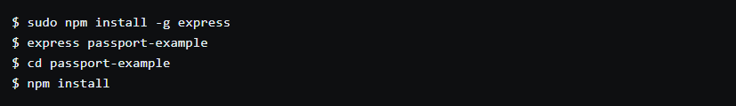
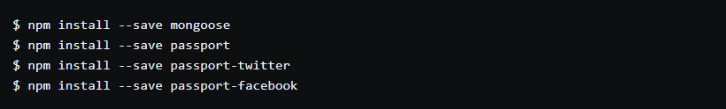
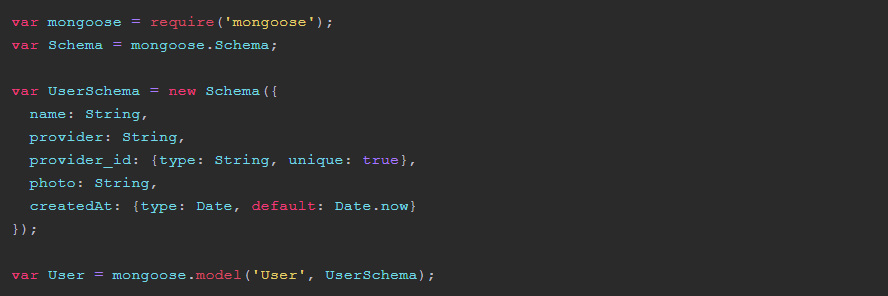
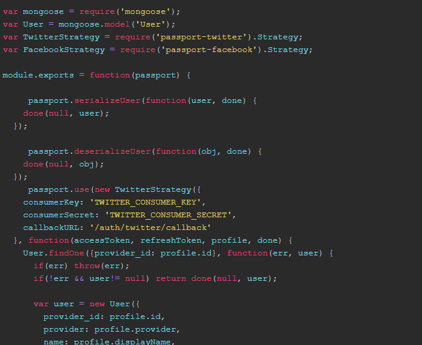
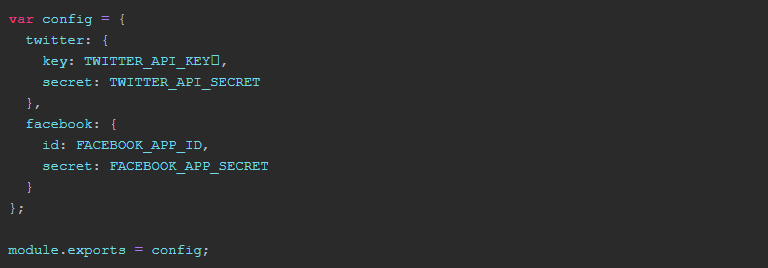
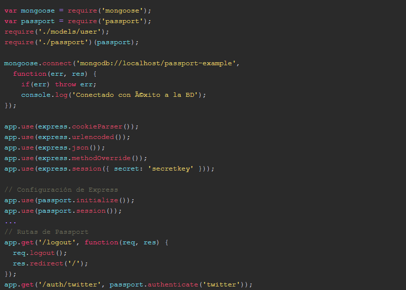

Registration and authorization of users in Node.js with Twitter and Facebook
Last Friday I was offered to teach a BONUS class on the students platform of Mejorando.la courses. The theme we chose was how to implement a user login system using social platforms (Twitter and Facebook) and using Node.js in the Backend.
First of all, we need to have Node.js and MongoDB installed on our computer. Node is the backend that we will use and MongoDB is a non-relational database, based on JSON documents. We can use any other database (for example, MySQL or any other). I do it with Mongo because it seems simpler and because it is based on JavaScript.
Next, we create an application base structure with the Express framework. In this way we create a "skeleton" with files and folders of a kind of "hello world" with Express.
We install the dependencies that we are going to use. Mongoose is the driver that helps us connect to MongoDB and implement schemas of the models we save in the database. Passport is the library that allows us to streamline the process of authenticating and registering users with Node.js. Passport-twitter and Passport-facebook are the specific libraries for login with Twitter and Facebook as we can use Passport without social networks implementing a local method with Passport-Local.
With the prefix --save we get the dependencies are recorded in the package.json
int-passp We create a user model /models/user.js where we will indicate what data we want to store in the database for our users. In this example we will save the name, the provider, an ID, the user's photo and a field where we will store the date in which the user registered in our application.
We configure Passport /passport.js* importing the libraries we use and the functions that allow us to login.
With seriealizeUser and deserializeUser we manage to get the user object stored in the session of the application and thus be able to use it throughout it.
With TwitterStrategy and FacebookStrategy we use the authentication strategies provided by Passport, we pass them as parameters the API Key and API secret that the platforms give us when we register an application in them, and they return several objects, including the profile object that contains all the information of the user that returns Twitter or Facebook and from which we can extract the attributes that we want for our application (name, ID, photo, etc.)
A good practice is to keep the Keys APIs separate from the source code that we upload to the repository, in a config.js file (or in the environment variables) that we then import from where we need it.
The main file of the Express application and therefore the server would be more or less like this app.js
This would be the Jade template that renders the index: /views/index.jade. As you can see, we apply a logic within the template. If the user object exists, we are logged into the application and therefore we ask you to show us the photo and the name and a link to leave. In case there is no user object is that we are not logged in, so we indicate that you show us the links to the registry / login with Twitter and Facebook
To create an application on Twitter we can go to http://dev.twitter.com and register a new application. We indicate the name and in the URL and website callback fields we give example.com since it does not allow us to put Localhost. With facebook is similar, the URL is http://developers.facebook.com and in this case if we can tell you that our application works on localhost.